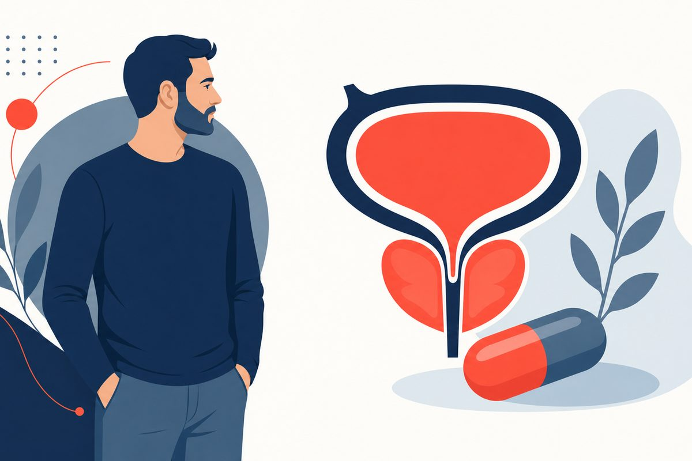
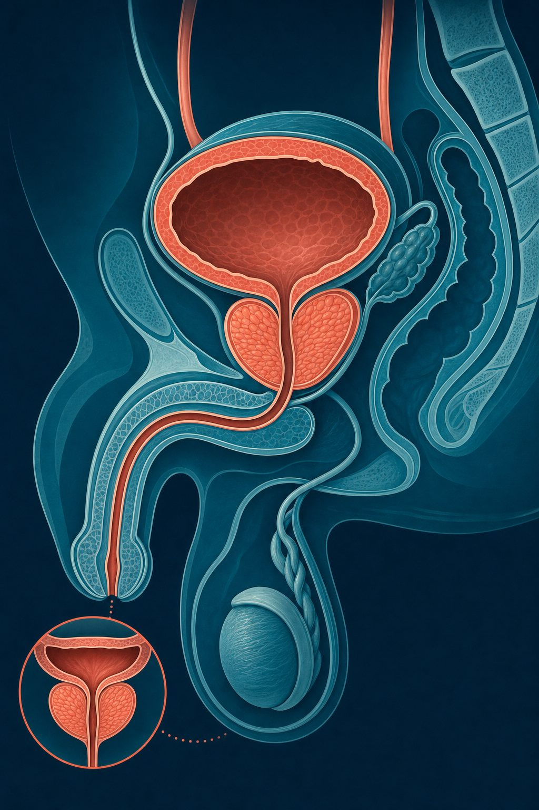
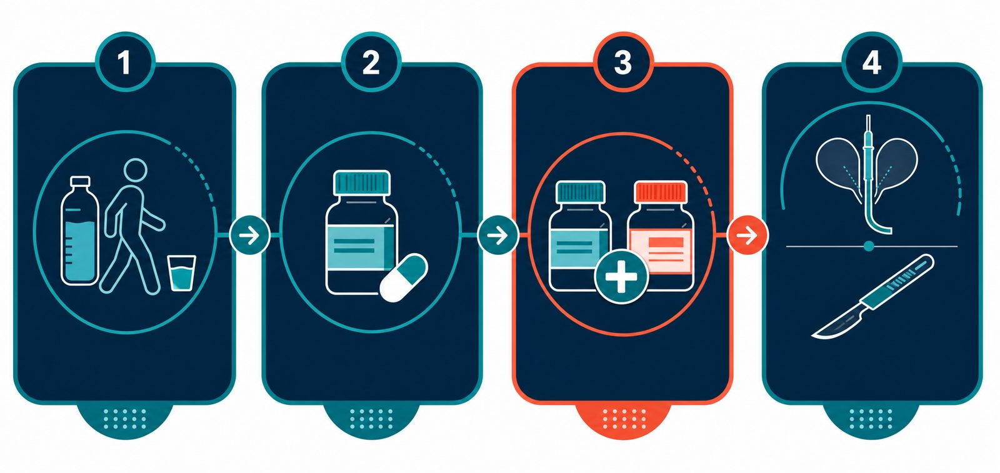

Key Takeaways
- Lower urinary tract symptoms (LUTS) from BPH affect an estimated 38.1 million U.S. men older than 30, about one in four, and roughly two of every three men age 50 and older.[7]
- The AUA released its updated BPH/LUTS guideline on May 7, 2026. It includes 62 recommendations, published in three parts: Presentation and Evaluation, Medical Management, and Procedural/Surgical Management.[4]
- Alpha blockers bring rapid improvement in symptoms. 5-alpha reductase inhibitors (finasteride, dutasteride) can take up to a year for full effect and are started when the prostate measures 30 mL or more on ultrasound.[7]
- Tadalafil 5 mg once daily is FDA-approved for the signs and symptoms of BPH, with or without erectile dysfunction. Its label says it is not recommended together with alpha blockers for BPH.[16]
- In the WATER II trial, Aquablation in men with large prostates (80 to 150 mL) showed durable symptom improvement and low retreatment rates at 5 years.[9]
- Of men who are treated for LUTS from BPH, about 1% go on to a procedure or surgery.[7]


What Is BPH, and Why Does It Cause So Many Urinary Symptoms?
The prostate gland sits directly beneath the bladder, and the urethra, the tube that carries urine out of the body, passes straight through its center. When the prostate enlarges, it can squeeze the urethra, making urination more difficult, slower, and incomplete. That mechanical reality is the core of what makes BPH so disruptive to daily life.
BPH stands for benign prostatic hyperplasia, the proliferation of glandular and stromal tissue within the prostate's transition zone.[1] The key word is benign: the growth is not caused by cancer, and having an enlarged prostate is not thought to raise the risk of getting prostate cancer.[5][6] The term LUTS, short for lower urinary tract symptoms, describes the voiding and storage problems that can come from the bladder, the prostate, the urethra, or other causes.[1]
The prostate goes through two major growth phases in a man's life. The first occurs during puberty. The second begins around age 25 and continues throughout life.[5] Whether that growth produces symptoms depends on anatomy, the degree of bladder involvement, and individual variation. Some men with significantly enlarged prostates have minimal symptoms; others with modest enlargement have severely disrupted lives. Prostate size alone does not determine symptom severity.
BPH affects an estimated 5% to 6% of men ages 40 to 64 and 29% to 33% of men ages 65 and older.[5] It is the most common prostate problem in men older than 50, and it rarely causes symptoms before age 40.[5]
What Causes BPH and Lower Urinary Tract Symptoms
The exact trigger for pathologic prostate growth is not fully understood. What is known is that age-related changes in sex hormone balance drive the process. As men age, total testosterone levels decline while relative estrogen levels rise. Dihydrotestosterone (DHT), which the enzyme 5-alpha reductase makes from testosterone, remains active in prostate tissue and continues to stimulate cellular growth. This is why drugs that block 5-alpha reductase (finasteride and dutasteride) can shrink the prostate over time.
Within the prostate, the growth occurs primarily in the transition zone, the inner portion of the gland immediately surrounding the urethra. As this zone expands, it creates a ring of pressure around the urethra, producing what is called bladder outlet obstruction. The bladder has to work harder to push urine through a narrowed channel, which leads first to bladder wall thickening (detrusor hypertrophy) and eventually to changes in bladder function.
The bladder's response to obstruction partly explains why BPH produces two distinct symptom categories. Obstruction of the urethra produces voiding (obstructive) symptoms. The bladder's compensatory hyperactivity produces storage (irritative) symptoms. Over time, an overworked bladder can lose its ability to contract effectively, leading to chronic urinary retention and post-void residual urine that creates a reservoir for urinary tract infections.
Risk Factors
Age is the single strongest predictor. Beyond that, public health and clinical sources list several other contributors:[5][7]
- Family history: A family history of BPH makes BPH more likely.
- Metabolic conditions: Obesity and type 2 diabetes are both listed as risk factors.
- Cardiovascular disease: Heart and blood vessel disease is listed among the conditions that make BPH more likely.
- Sedentary lifestyle: Not being physically active raises risk, and lack of daily walking is associated with progression of LUTS.
- Hypertension: High blood pressure is associated with more LUTS and larger prostate volumes.
- Erectile dysfunction (ED): ED is listed among the conditions linked with BPH, and the two often need to be considered together in treatment planning.
BPH is not caused by cancer.[5] Lifestyle changes can still matter for symptoms, as the treatment section explains.
Symptoms: Obstructive vs. Irritative, and the IPSS Scale
BPH symptoms fall into two categories, and understanding the difference matters because treatment approaches can differ depending on which type predominates.
Obstructive (voiding) symptoms reflect the mechanical effect of the enlarged prostate compressing the urethra:
- Weak or intermittent urine stream
- Hesitancy (difficulty getting the stream started)
- Straining to void
- Post-void dribbling
- Sensation of incomplete bladder emptying
- Urinary retention (partial or, in severe cases, complete)
Irritative (storage) symptoms reflect bladder dysfunction: urgency, frequency, and nocturia that arise from the overworked, hyperactive bladder:
- Urinary urgency (sudden, difficult-to-delay urge to urinate)
- Frequency (urinating more often than usual during the day)
- Nocturia (waking at night to urinate)
- Urgency incontinence (leakage before reaching the toilet)
Clinicians use the International Prostate Symptom Score (IPSS), a short symptom questionnaire, to measure symptom severity; a 2023 evidence review calls it the best way to track symptoms. It is the only symptom score shown to significantly predict urinary retention, and a score of 20 or higher indicates severe symptoms.[7] Higher scores mean more severe symptoms; how much the symptoms bother you matters as much as the number when deciding on treatment.
What's Changed: The 2026 AUA Guideline Update
The American Urological Association released its updated BPH/LUTS guideline on May 7, 2026. The updated guideline includes 62 recommendations.[4] The systematic review behind it searched the literature through January 2025, with update searches on December 15, 2025.[1] The guideline is published in three parts in the Journal of Urology.
Part I, Presentation and Evaluation: Patient history, physical examination, the appropriate use of tests, and patient counseling.[1]
Part II, Medical Management: Behavioral and lifestyle interventions plus medical therapy, with specific risks described for groups such as men having eye surgery.[2]
Part III, Procedural/Surgical Management: General procedural principles, with added sections on sexual function, retreatment rates, and postoperative follow-up.[3]
A note on sources: the full 2026 guideline text sits behind a member login on the AUA website, so this guide does not restate individual 2026 recommendation statements or evidence grades. The published summaries are quoted below, and the medication and procedure details elsewhere on this page come from FDA labels and peer-reviewed studies we could read in full or in abstract.
Key Updates in Evaluation
The Part I summary says bothersome symptoms are the main reason men seek treatment and generally drive management decisions, so shared decision-making plays a critical role in starting and stepping up treatment.[1] On PSA, a 2023 evidence review notes that serum PSA testing is not recommended in the routine evaluation of LUTS, and that shared decision-making should be used for prostate cancer screening decisions.[7]
Key Updates in Medical Management
The Part II summary says non-procedural treatment should be chosen through shared decision-making that weighs efficacy, durability, and side effects. It also stresses telling specific groups about unique actions of medicines, naming men on active surveillance for prostate cancer.[2] For men considering tadalafil with a 5-ARI, a 2024 randomized trial found tadalafil plus finasteride and tamsulosin plus finasteride comparably effective for urinary symptoms within three months, with tadalafil plus finasteride improving sexual performance.[10]
Key Updates in Procedural Management
The Part III summary describes procedural management as a balance between efficacy, durability, and procedure-specific side effects, with shared decision-making used to tailor the choice to the individual.[3] For prostate artery embolization (PAE), the 2023 evidence review we cite rated the evidence for its main outcomes as low or very low certainty.[7] How the 2026 guideline grades PAE could not be confirmed from the public summary, so ask a urologist how it applies to you.
For Aquablation therapy (robotic waterjet resection), the final 5-year WATER II results in 101 men with prostates of 80 to 150 mL showed the procedure to be safe, with durable efficacy and low rates of retreatment.[9]
The Decision Framework: When to Treat, When to Refer
Not every man with BPH symptoms needs treatment. Which therapy to start, if any, depends on three inputs: symptom severity (IPSS score), degree of bother, and clinical findings. A man whose symptoms are mild and only slightly inconvenient is a different clinical scenario from a man with severe symptoms who is waking several times a night.
The general framework, drawn from a 2023 evidence review, works like this:[7]
| Clinical Scenario | Recommended Approach |
|---|---|
| Mild symptoms, low bother, no complications | Self-management: limit evening fluids, cut back on caffeine and alcohol, toilet and bladder training |
| Bothersome symptoms despite self-management | Primary medical treatment with an alpha blocker or a PDE5 inhibitor such as tadalafil |
| Uncontrolled symptoms with a prostate of 30 mL or more on ultrasound | Add a 5-ARI; the combination with an alpha blocker beats either drug alone after more than a year |
| Acute urinary retention | Emergency care and catheterization; start an alpha blocker at catheterization and treat for three days before trying to remove the catheter |
| Poor control or complications (urinary retention, recurrent UTIs, renal insufficiency, recalcitrant gross hematuria) | Discuss procedural or surgical options |
An important nuance in evaluation: the AUA recommends transrectal ultrasonography before treatment with 5-alpha reductase inhibitors or surgery, although evidence that measuring prostate size before starting medication improves outcomes is limited.[7] A digital rectal exam reliably identifies only prostates larger than 50 mL, so it can miss smaller but still significant enlargement.[7]
Men who have primarily storage symptoms (urgency, frequency, nocturia) that do not respond to prostate-focused medicine may have a concurrent overactive bladder component requiring separate evaluation. LUTS can come from the bladder, the prostate, the urethra, or other problems, so a careful history, physical examination, and appropriate tests come before treatment.[1]

Treatment Options: A Full Review
Lifestyle and Behavioral Modifications
These are the starting point for mild symptoms and a supplement to medication at all severity levels. Low- to moderate-quality evidence suggests that self-management techniques improve symptoms.[7]
- Fluid management: Limit fluids in the evening and before outings where bathroom access is limited.
- Reduce caffeine and alcohol: Both are part of the self-management approach that can improve symptoms.
- Toilet and bladder training: Scheduled voiding and urge suppression, along with pelvic floor exercises, are part of the same evidence-supported self-management package.
- Sitting to urinate: Low-quality evidence suggests sitting while urinating reduces the urine left in the bladder afterward.
- Physical activity: Lack of daily walking is associated with progression of LUTS.
- Medication review: Antihistamines, decongestants such as pseudoephedrine, tricyclic antidepressants, diuretics, anticholinergics, opioid pain medicines, and some bronchodilators can cause urinary symptoms of their own, so a medication review is worthwhile.
Alpha Blockers (Uroselective Agents)
These first-line medications relax smooth muscle in the bladder neck and prostate, widening the urethral channel without changing prostate size. Based on 19 randomized controlled trials with nearly 10,000 participants, alpha blockers lead to rapid improvement in LUTS compared with placebo.[7]
Commonly used uroselective options, with doses from their FDA labels:
- Tamsulosin (Flomax): 0.4 mg once daily, taken about half an hour after the same meal each day. In label trials, abnormal ejaculation was reported in 8.4% of men on 0.4 mg versus 0.2% on placebo.[11]
- Silodosin (Rapaflo): 8 mg once daily with a meal, or 4 mg with moderate kidney impairment. Retrograde ejaculation was reported in 28.1% of men on silodosin versus 0.9% on placebo, and the label says it is reversible when treatment stops.[12]
- Alfuzosin (Uroxatral): one 10 mg extended-release tablet once daily, taken with food and with the same meal each day.[13]
Selective alpha blockers are more likely to cause ejaculatory dysfunction, while nonselective ones are more likely to cause low blood pressure on standing.[7] Important safety note: Intraoperative Floppy Iris Syndrome (IFIS) has been seen during cataract and glaucoma surgery in men taking tamsulosin, and starting it when cataract or glaucoma surgery is already scheduled is not recommended.[11] If eye surgery is planned, avoid starting an alpha blocker until the ophthalmologist has evaluated you, and tell the ophthalmologist if you already take one.[7][12]
5-Alpha Reductase Inhibitors (5-ARIs)
Finasteride (Proscar) is taken as one 5 mg tablet once a day, and dutasteride (Avodart) as one 0.5 mg capsule once daily.[14][15] They block the enzyme that converts testosterone to DHT, and in trials they decreased prostate volume by 15% to 25% at six months. Their full effect can take up to one year.[7] The finasteride label tells patients they may need to take it for six months or more to see whether it improves symptoms.[14]
The AUA recommends these agents for uncontrolled symptoms when prostate volume is 30 mL or greater on imaging. Combined with an alpha blocker, a 5-ARI is more effective than either medicine alone after more than one year; at one year or less, no difference occurs.[7]
Both drugs lower PSA by about half. Finasteride reduced PSA by approximately 50% within six months, and the label says PSA values should be doubled for comparison with normal ranges in untreated men; the dutasteride label gives the same instruction.[14][15] Both labels also warn of a small increase in high-grade prostate cancer: Gleason 8 to 10 cancer occurred in 1.8% of men on finasteride versus 1.1% on placebo in one trial, and in 1.0% on dutasteride versus 0.5% on placebo in another. Neither drug is approved to prevent prostate cancer.[14][15] Sexual side effects such as impotence and decreased libido were more common than with placebo, and women who are or may be pregnant should not handle crushed or broken finasteride tablets or leaking dutasteride capsules.[14][15] If you are on active surveillance for prostate cancer, the 2026 guideline summary says the unique actions of these medicines should be disclosed to you, so discuss them with your urologist.[2]
Tadalafil 5 mg Daily (PDE5 Inhibitor)
Tadalafil, the same medicine used for erectile dysfunction, is FDA-approved at 5 mg once daily, taken at about the same time every day, for the signs and symptoms of BPH and for ED together with BPH.[16] A 2020 meta-analysis of 7 randomized controlled trials (1,601 patients) found no significant difference between tadalafil and tamsulosin in total IPSS, and found tadalafil better for erectile function scores.[8]
That makes tadalafil a natural option when ED and LUTS coexist, since one daily medication addresses both.[8] When tadalafil is used with finasteride to start BPH treatment, the label recommends this for up to 26 weeks.[16] Key safety points from the label: tadalafil is not recommended in combination with any alpha blocker for treating BPH, because the combination can lower blood pressure; it must not be used with any form of organic nitrate or with guanylate cyclase stimulators such as riociguat; and once-daily use is not recommended when creatinine clearance is below 30 mL/min.[16]
Beta-3 Agonist (Mirabegron) and Anticholinergics
When storage symptoms dominate (urgency, frequency, nocturia), bladder-targeted agents are sometimes considered. Mirabegron (Myrbetriq) is FDA-approved for overactive bladder in adults, starting at 25 mg once daily, with an increase to a maximum of 50 mg after 4 to 8 weeks. Its label warns that urinary retention has been reported in patients with bladder outlet obstruction, advises caution in men also taking antimuscarinic medicines, and notes it can raise blood pressure.[17] For LUTS from BPH specifically, the 2023 evidence review found that mirabegron does not improve symptoms more than placebo. The same review notes that anticholinergics (such as solifenacin, oxybutynin, and tolterodine) are limited by risks of acute urinary retention, dementia, and mental status changes.[7]
Combination Therapy
The most established combination is an alpha blocker plus a 5-ARI for men with larger prostates; it outperforms either drug alone after more than one year.[7] Dutasteride is FDA-approved in combination with tamsulosin for symptomatic BPH in men with an enlarged prostate.[15] The 2024 trial comparing tadalafil plus finasteride with tamsulosin plus finasteride enrolled men with prostates larger than 40 mL and excluded severe ED; 131 and 127 patients were available at 4 and 12 weeks. Both regimens improved IPSS comparably, and the tadalafil combination improved sexual performance.[10]
Procedural Options: Evidence Summary
The table below summarizes the 2023 evidence review and the WATER II trial; it is a starting point for a conversation with a urologist, not a ranking.[7][9]
| Procedure | Prostate Size | Setting | What the Evidence Shows |
|---|---|---|---|
| TURP (transurethral resection) | Average size, 30 to 80 mL | OR | The most effective option, with robust long-term data; risks include bleeding, incontinence, and sexual side effects |
| HoLEP (holmium laser enucleation) | Large, over 80 mL | OR | Less invasive alternative to simple prostatectomy for large glands; shorter hospital stay; results depend on the surgeon's level of expertise |
| PAE (prostate artery embolization) | Discuss with specialist | Interventional radiology | The 2023 review rated the evidence for its main outcomes as low or very low certainty |
| Aquablation (robotic waterjet) | 80 to 150 mL studied in WATER II | OR (general anesthesia) | Five-year WATER II data: durable efficacy and low retreatment in large prostates; the 2023 review lists reduced incontinence, erectile dysfunction, and ejaculatory dysfunction among its advantages |
| UroLift (prostatic urethral lift) | Discuss with specialist | Office | Requires the absence of a middle prostatic lobe; less improvement in symptoms than TURP |
| Rezum (water vapor thermal therapy) | Discuss with specialist | Minimally invasive | Preservation of erectile and ejaculatory function; possible higher retreatment rate |
| Simple prostatectomy (open/robotic) | Large, over 80 mL | OR | Recommended over TURP for large prostates; the most invasive option |
| Transurethral needle ablation | N/A | Not recommended | Not currently recommended because of worse symptom outcomes than other available procedures |
What Telehealth Can Do, and What It Cannot
BPH management involves two distinct pathways, and understanding which belongs to telehealth and which belongs in a clinic or operating room helps you plan your care efficiently.
What Works Well via Telehealth
The initial clinical conversation, including history-taking, IPSS administration, and shared decision-making, can happen productively through a video visit. Lifestyle counseling (fluid management strategies, caffeine and alcohol reduction, bladder training techniques) is fully telehealth-compatible. Prescribing uroselective alpha blockers such as tamsulosin, silodosin, or alfuzosin can be appropriate remotely when the history identifies no contraindications.
Tadalafil 5 mg daily for the LUTS and ED overlap population is another area where telehealth fits well, after checking for nitrate use and alpha blocker use. Monitoring 5-ARI therapy, after prostate size has been measured in person, can continue via telehealth, including reviewing the PSA interpretation adjustment these drugs require. Follow-up visits to check whether medical therapy is working are well suited to video when no new procedural evaluation is needed.
What Requires an In-Person Visit
Several critical diagnostic elements cannot be performed remotely:
- Digital rectal exam (DRE): Assesses prostate size, consistency, and any concerning nodules; it can only be done in person, and it has limited accuracy for estimating prostate size.[7]
- PSA blood draw: Must be done at a laboratory; results can then be reviewed via telehealth.
- Uroflowmetry: Measures peak urinary flow rate (Qmax), a key measure of obstruction.
- Post-void residual (PVR) measurement: Performed by bladder ultrasound or catheterization; used when retention is suspected.
- Transrectal ultrasound (TRUS): Recommended by the AUA before starting 5-ARIs or surgery.[7]
- Urodynamic studies (UDS): For complex cases with possible neurogenic components or pre-surgical planning.
- Cystoscopy: For evaluation of hematuria, suspected stricture, or pre-procedural assessment.
- All procedural interventions: PAE, Aquablation, TURP, HoLEP, UroLift, and Rezum all require specialized facilities.
A practical care model for many patients: telehealth handles the first visit, lifestyle counseling, alpha blocker initiation, and follow-up monitoring. In-person visits handle the physical exam, labs, imaging, and any procedures. These two pathways work together, and neither replaces the other.
Red Flags: When to Skip Telehealth and Get Urgent Care
- Acute urinary retention: If you cannot urinate at all, get medical help right away.[5][6] This usually requires catheterization and same-day urologic evaluation.
- Gross hematuria: Blood in your urine needs prompt evaluation by a health care professional.[5]
- Fever with urinary symptoms: Painful, frequent, and urgent urination with fever and chills needs prompt in-person care.[5]
- Neurological symptoms: New numbness in the groin or saddle area, leg weakness, or loss of bowel or bladder control can signal spinal cord compression and is an emergency.
- Rapidly rising PSA: A significant, unexplained PSA rise needs in-person urologic evaluation to look for prostate cancer, and telehealth alone is not enough.
- Signs of kidney trouble: Decreased urine output with BPH symptoms, flank pain, or a high creatinine on labs can mean the blockage is affecting the kidneys and needs urgent urologic assessment.
Acute urinary retention deserves emphasis. A 2023 evidence review advises that for acute urinary retention, an alpha blocker should be started immediately at urinary catheterization, and the patient treated for three days before attempting to remove the catheter.[7] This is not something telehealth can manage, but a telehealth physician can help you recognize it and direct you to the right place.
Frequently Asked Questions
BPH and prostate cancer are separate conditions. BPH growth is not caused by cancer, and having an enlarged prostate is not thought to raise the risk of getting prostate cancer.[5][6] Because they occur in the same organ, both can be present at once, and some findings, particularly a rapidly rising PSA, warrant investigation. Your physician may suggest PSA testing after a shared decision-making conversation, but a BPH diagnosis alone is not a cancer warning sign.
Alpha blockers work quickly: in randomized trials they led to rapid improvement in urinary symptoms compared with placebo.[7] They relax smooth muscle in the prostate and bladder neck, a mechanical effect that does not depend on shrinking the prostate. If you notice little benefit after a few weeks, a follow-up visit is appropriate to review the dose, prostate size, and whether other therapy is warranted.
Abnormal ejaculation, which includes ejaculation failure, decreased ejaculation, and retrograde ejaculation, is the main sexual side effect of tamsulosin; it was reported in 8.4% of men on 0.4 mg in label trials.[11] The tamsulosin label does not say whether it resolves after stopping. The silodosin label states that its retrograde ejaculation is reversible when treatment stops.[12] If sexual side effects are a concern, ask your physician about switching agents or about tadalafil 5 mg daily, which matched tamsulosin for urinary symptoms and did better on erectile function in a meta-analysis of randomized trials.[8]
Serum PSA testing is not recommended as a routine part of evaluating urinary symptoms, and shared decision-making should be used for prostate cancer screening decisions.[7] Your physician may suggest it based on your age, family history, symptoms, and exam findings. One important note: finasteride and dutasteride lower PSA by about 50%, so their labels say a PSA value should be doubled for comparison with normal ranges in untreated men.[14][15]
Of men who are treated for LUTS from BPH, about 1% have a procedure or surgery.[7] Procedural treatment is usually considered when lifestyle changes and medicines have not helped enough, when side effects are intolerable, when a man wants to avoid daily medication, or when there are signs of poor control such as urinary retention, recurrent urinary tract infections, kidney problems, or persistent visible blood in the urine.[7] Options range from minimally invasive procedures (prostatic urethral lift, water vapor therapy) to endoscopic surgery (TURP, HoLEP) and Aquablation. Prostate size, anatomy, and personal priorities all guide the decision.
Researchers have not found a way to prevent BPH, but being physically active may help reduce your risk.[5] Sedentary lifestyle, high blood pressure, and diabetes increase the risk of urinary symptoms, so staying active and keeping blood pressure and blood sugar under control are sensible steps.[7] The same habits, along with limiting evening fluids, caffeine, and alcohol, are also the foundation of first-line management once symptoms begin.
Telehealth is well suited to several parts of BPH care: initial symptom assessment with IPSS scoring, prescribing and monitoring alpha blockers, lifestyle counseling, managing the LUTS and ED overlap with tadalafil, and follow-up visits to check how treatment is working. What telehealth cannot replace: the digital rectal exam, PSA blood draws, uroflowmetry, post-void residual measurement, urodynamic studies, cystoscopy, and any procedural treatment. A well-structured care plan often uses both: telehealth for starting and monitoring treatment, and in-person care for diagnostic procedures and physical exams.
It can be, for appropriate patients. The tadalafil label covers starting BPH treatment with tadalafil plus finasteride and recommends that use for up to 26 weeks.[16] A 2024 randomized trial in men with prostates larger than 40 mL found tadalafil plus finasteride and tamsulosin plus finasteride comparably effective for urinary symptoms within three months, with tadalafil plus finasteride improving sexual performance.[10] Firm safety rules: tadalafil must not be taken with any form of organic nitrate or with riociguat, and its label does not recommend combining it with alpha blockers for BPH because blood pressure can drop.[16]
Bottom Line
BPH and LUTS affect most men as they age, but most cases can be managed without surgery. The 2026 AUA guideline, published in three parts with 62 recommendations, puts shared decision-making at the center of evaluation, medical therapy, and procedural choices.
The practical takeaway is this: if you have urinary symptoms that are affecting your sleep, your daily activities, or your quality of life, start with a conversation. That first conversation can happen via telehealth in many cases. What follows, such as the physical exam, imaging, labs, and any procedures, will determine the full picture and the right treatment path. Neither telehealth nor in-person care alone covers the full spectrum of BPH management. Together, they do.
Current evidence supports a stepwise, patient-centered approach: lifestyle first, an alpha blocker or tadalafil for bothersome symptoms, a 5-ARI added when the prostate is 30 mL or larger, and procedural options for men whose symptoms stay uncontrolled or who develop complications.
Video visits with a board-certified physician for enlarged prostate (BPH) medication management are available through TeleDirectMD. TeleDirectMD is a telehealth practice. This guide is educational, is not sponsored, and contains no affiliate links.
How to cite this guide
Bhavsar P. Benign Prostatic Hyperplasia (BPH) & Lower Urinary Tract Symptoms: 2026 Treatment Guide. TeleDirectMD Health Guides. Last reviewed May 2026. https://teledirectmd.com/health-guides/bph-luts-treatment-guide/
References
- Goueli R, Badlani GH, Welliver C, et al. Management of Lower Urinary Tract Symptoms Attributed to Benign Prostatic Hyperplasia: AUA Guideline (2026) Part I: Presentation and Evaluation. J Urol. 2026;216(2):143-151. doi:10.1097/JU.0000000000005097. PMID 42095481. https://pubmed.ncbi.nlm.nih.gov/42095481/
- Goueli R, Badlani GH, Welliver C, et al. Management of Lower Urinary Tract Symptoms Attributed to Benign Prostatic Hyperplasia: AUA Guideline (2026) Part II: Medical Management. J Urol. 2026;216(2):152-160. doi:10.1097/JU.0000000000005098. PMID 42095477. https://pubmed.ncbi.nlm.nih.gov/42095477/
- Goueli R, Badlani GH, Welliver C, et al. Management of Lower Urinary Tract Symptoms Attributed to Benign Prostatic Hyperplasia: AUA Guideline (2026) Part III: Procedural/Surgical Management. J Urol. 2026;216(2):161-170. doi:10.1097/JU.0000000000005099. PMID 42095468. https://pubmed.ncbi.nlm.nih.gov/42095468/
- American Urological Association. American Urological Association Releases the Management of Lower Urinary Tract Symptoms Attributed to Benign Prostatic Hyperplasia Guideline [press release]. GlobeNewswire. May 7, 2026. Accessed November 15, 2026. https://www.globenewswire.com/news-release/2026/05/07/3290220/0/en/american-urological-association-releases-the-management-of-lower-urinary-tract-symptoms-attributed-to-benign-prostatic-hyperplasia-guideline.html
- National Institute of Diabetes and Digestive and Kidney Diseases. Prostate Enlargement (Benign Prostatic Hyperplasia). Last reviewed June 2024. Accessed November 15, 2026. https://www.niddk.nih.gov/health-information/urologic-diseases/prostate-problems/prostate-enlargement-benign-prostatic-hyperplasia
- Mayo Clinic. Benign Prostatic Hyperplasia (BPH): Symptoms and Causes. December 23, 2025. Accessed November 15, 2026. https://www.mayoclinic.org/diseases-conditions/benign-prostatic-hyperplasia/symptoms-causes/syc-20370087
- Arnold MJ, Gaillardetz A, Ohiokpehai J. Benign Prostatic Hyperplasia: Rapid Evidence Review. Am Fam Physician. 2023;107(6):613-622. PMID 37327163. https://www.aafp.org/afp/2023/0600/benign-prostatic-hyperplasia
- Guo B, Chen X, Wang M, et al. Comparative Effectiveness of Tadalafil versus Tamsulosin in Treating Lower Urinary Tract Symptoms Suggestive of Benign Prostate Hyperplasia: A Meta-Analysis of Randomized Controlled Trials. Med Sci Monit. 2020;26:e923179. doi:10.12659/MSM.923179. PMID 32327621. https://pubmed.ncbi.nlm.nih.gov/32327621/
- Bhojani N, Bidair M, Kramolowsky E, et al. Aquablation Therapy in Large Prostates (80-150 mL) for Lower Urinary Tract Symptoms Due to Benign Prostatic Hyperplasia: Final WATER II 5-Year Clinical Trial Results. J Urol. 2023;210(1):143-153. doi:10.1097/JU.0000000000003483. PMID 37115632. https://pubmed.ncbi.nlm.nih.gov/37115632/
- Tawfik A, Abo-Elenen M, Gaber M, et al. Tadalafil versus tamsulosin as combination therapy with 5-alpha reductase inhibitors in benign prostatic hyperplasia, urinary and sexual outcomes. World J Urol. 2024;42(1):70. doi:10.1007/s00345-023-04735-y. PMID 38308714. https://pubmed.ncbi.nlm.nih.gov/38308714/
- Sandoz Inc. Tamsulosin hydrochloride capsules: prescribing information. Revised September 2024. DailyMed. Accessed November 15, 2026. https://dailymed.nlm.nih.gov/dailymed/drugInfo.cfm?setid=fb120098-b007-4a33-80b8-b7279c7668ee
- Amneal Pharmaceuticals NY LLC. Silodosin capsules: prescribing information. Revised March 2021. DailyMed, updated April 15, 2026. Accessed November 15, 2026. https://dailymed.nlm.nih.gov/dailymed/drugInfo.cfm?setid=de619e27-9384-4b86-abdc-de0557cd39e8
- Advanz Pharma (US) Corp. UROXATRAL (alfuzosin HCl) extended-release tablets: prescribing information. Revised November 2023. DailyMed, updated December 5, 2024. Accessed November 15, 2026. https://dailymed.nlm.nih.gov/dailymed/drugInfo.cfm?setid=9fc7f119-f36b-44cf-945d-940160f3afe3
- Organon LLC. PROSCAR (finasteride) tablets: prescribing information. Revised March 2026. DailyMed, updated March 18, 2026. Accessed November 15, 2026. https://dailymed.nlm.nih.gov/dailymed/drugInfo.cfm?setid=6f988153-fc74-4ca4-b29a-111f750c4a4b
- Waylis Therapeutics LLC. AVODART (dutasteride) capsules: prescribing information. Revised October 2023. DailyMed, updated March 12, 2025. Accessed November 15, 2026. https://dailymed.nlm.nih.gov/dailymed/drugInfo.cfm?setid=960797b3-09b1-4d6a-8ece-8b5d918e93e4
- Eli Lilly and Company. CIALIS (tadalafil) tablets: prescribing information. Revised March 2026. DailyMed, updated June 3, 2026. Accessed November 15, 2026. https://dailymed.nlm.nih.gov/dailymed/drugInfo.cfm?setid=bcd8f8ab-81a2-4891-83db-24a0b0e25895
- Astellas Pharma US, Inc. MYRBETRIQ (mirabegron) extended-release tablets: prescribing information. Revised April 2021. DailyMed, updated August 1, 2024. Accessed November 15, 2026. https://dailymed.nlm.nih.gov/dailymed/drugInfo.cfm?setid=ba9e9e15-e666-4c56-9271-2e24739cfa2d